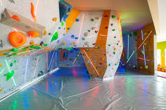

Rólunk
Az IBEX Sport Falmászás 2014 óta Győrött várja a mászás szerelmeseit. Célunk, hogy a falmászást mindenki számára elérhetővé tegyük, a kezdőktől a profi versenyzőkig. Termünk 2019 óta a Dunántúl legnagyobb mászóterme, 750 m2-en nyújt lehetőséget a mászás élményének megtapasztalására.
Boulder fal
Lehetővé teszi a technikai mászás gyakorlását kötelek és hámok nélkül, fokozva az erő és a mozgáskoordináció fejlődését.
Gyerek fal
Biztonságos és szórakoztató környezetet biztosít a gyerekeknek, ahol fejleszthetik motoros készségeiket és önbizalmukat.
Edzőterem
Kiváló hely az általános erőnlét és állóképesség javítására, támogatva a mászás során szükséges izomcsoportok erősítését.
Campus fal
Ideális a dinamikus és robbanékony mozdulatok gyakorlására, amelyek növelik az ujjak és a felsőtest erejét, valamint a mászók technikai készségeit.